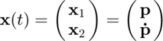
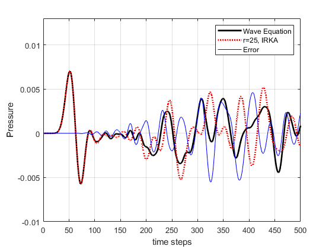

Acoustic Wave Propagation using Wave Equation
Model generation and reduction of acoustic wave propogation using the wave equation, i.e.
where  represents pressure and , where
represents pressure and , where  is the uniform density and
is the uniform density and  is the speed of sound in the medium. In this version we will interpolate the second order system directly via Galerkin projection, optimized using second order IRKA.
is the speed of sound in the medium. In this version we will interpolate the second order system directly via Galerkin projection, optimized using second order IRKA.
Contents
Semi-discretization
In order to perform model reduction, we first want to develop a model for our system which looks like:
We start by semi-discretizing the wave equation in space; this transforms the laplacian, which contains spacial first derivatives, into a collection of finite differences, i.e.
Laplacian Finite Difference Wikipedia
This transforms the wave equation from a 2nd order PDE into n 2nd order coupled ODEs, where n=xdim*ydim, and the xy grid size is xdim by ydim. The laplacian is turned into the coefficient matrix  , which can be deduced from the discretization shown above.
, which can be deduced from the discretization shown above.
Formulating the system matrices , , and
Define grid size and spacing (square for now)
clear; close all; clc; animate=1; %Set to 0 to save time when doing comments rho=1.2; c=345; % rho=-1; c=1; xdim=40; ydim=xdim; dx=.25; dy=dx; n=xdim*ydim;
Populate the coefficient matrix , i.e. the discretized laplacian operator. It has an almost toeplitz form, with some extra zeros on the off diagonal for boundary element conditions.
row=[-2/dx^2-2/dy^2 1/dy^2 zeros(1, ydim-2) 1/dx^2 zeros(1,n-(ydim+1))]; K=-rho * c^2 * toeplitz(row);
Set boundary element contributions to zero on the off diagonal(artifact from making pressure matrix into a vector for state) (zero gives Dirichlet aka mirror BC).
for i = 1:xdim-1 K(i*xdim+1,i*xdim)=0; K(i*xdim,i*xdim+1)=0; end
We can also define a damping matrix . Here we do proportional damping.
Alpha = 0; D = Alpha*K;
We also define our initial condition  , where is an impulse.
, where is an impulse.
xx=1:xdim; yy=1:xdim; parab_x0=20; parab_y0=parab_x0; %choose parabHeight = height of parabola parabHeight=.05; parabRadius=10; % how many grid space for the radius of the parabola beta=parabHeight/(parabRadius*dy)^2; alfa=beta; p0=zeros(xdim); for i=1:xdim for j=1:xdim if -alfa*(xx(i) -parab_x0)^2-beta*(yy(j)-parab_y0)^2+parabHeight >= 0 p0(i,j)=-alfa*(xx(i) -parab_x0)^2-beta*(yy(j)-parab_y0)^2+parabHeight; end end end B=p0(:);
Solve the full model using ODE45 as a baseline
As a baseline model, we solve the full system with ODE45. In order to do so, we convert to 2n first order systems by defining our state vector

and forming the coefficient matrix  for the state space system
for the state space system
A=[zeros(xdim^2) eye(xdim^2);
-K -D];
x0=zeros(1,2*n);
x0(1:n)=B;
tf=0.05;
ti=500;
tspan = linspace(0,tf,ti);
[t, x] = ode45(@(t,p) myfun(t,p,A), tspan, x0);
fullP=x(:,1:n);
Form Galerkin reduction basis 
We form reduction basis for the system, given by an orthonormal basis for the space spanned by the vectors
r=5^2;
irkaIters= 25;
tol = .1;
si=zeros(irkaIters+1,r);
si(1,:)=logspace(1,5,r);
%si(1,:)=linspace(10,10^5,r);
I = eye(n);
Vi=zeros(irkaIters,n,r);
Vr=zeros(irkaIters,n,r);
We implement IRKA for the second order system to allow the sampling points to converge
for j=1:irkaIters
for i=1:r Vi(j,:,i)=(si(j,i)^2*I+si(j,i)*D+K)\B; end
We use QR decomposition to obtain our orthogonal basis in case is rank defficient. This ensures that .
[Vr(j,:,:),~] = qr(squeeze(Vi(j,:,:)), 0);
% The updated interpolation points are the reduced order poles, given by polyeig
reducedEigs = polyeig(squeeze(Vr(j,:,:))'*K*squeeze(Vr(j,:,:)),squeeze(Vr(j,:,:))'*D*squeeze(Vr(j,:,:)),eye(r))'; %sqrt(eig(squeeze(Vr(j,:,:))'*K*squeeze(Vr(j,:,:))));
si(j+1,:) = -imag(reducedEigs(2:2:end));
if min(abs(si(j+1,:) - si(j,:))) < tol
endJ=j;
break % If IRKA converges
end
end % figure % loglog(si, abs(Vi(1,:)))
Solve the reduced model using ODE45
Set up the reduced system matrices using Galerkin projection
and solve using ODE45 as before.
for j=1:endJ rEffec=r; VrEffec=squeeze(Vr(j,:,:)); Kr=VrEffec'*K*VrEffec; Dr=VrEffec'*D*VrEffec; Br=VrEffec'*B; Ar=[zeros(rEffec) eye(rEffec); -Kr -Dr]; xr0=zeros(1,2*rEffec); xr0(1:rEffec)=Br; [t, xr] = ode45(@(t,pr) myfun(t,pr,Ar), tspan, xr0); % Project back to full space reducedP=(VrEffec*xr(:,1:rEffec)')'; end
Plot the animations
if animate % for k = 1:3:ti % surf(vectomat(fullP(k,:)-reducedP(k,:),ydim,xdim)); % axis([0 ydim 0 xdim -.1 .1]) % drawnow; % errorFrames(k) = getframe; % end for k = 1:3:ti surf(vectomat(fullP(k,:),ydim,xdim)); axis([0 ydim 0 xdim -.1 .1]) drawnow; Mframes(k) = getframe; end for k = 1:3:ti surf(vectomat(reducedP(k,:),ydim,xdim)); axis([0 ydim 0 xdim -.1 .1]) drawnow; Mrframes(k) = getframe; end end

Time plot comparisons
figure point=11.5*xdim; rmodel=reducedP(:,point); fmodel=fullP(:,point); plot(1:ti,fmodel,'k','LineWidth',2) axis([0 500 -10e-3 13e-3]) hold on plot( 1:ti,rmodel,'r:','LineWidth',2) plot( 1:ti,fmodel-rmodel,'b') xlabel('time steps') ylabel('Pressure') grid on legend( 'Wave Equation',['r=',num2str(r),', IRKA'],'Error') function dp = myfun(t,p,A) dp=A*p; end